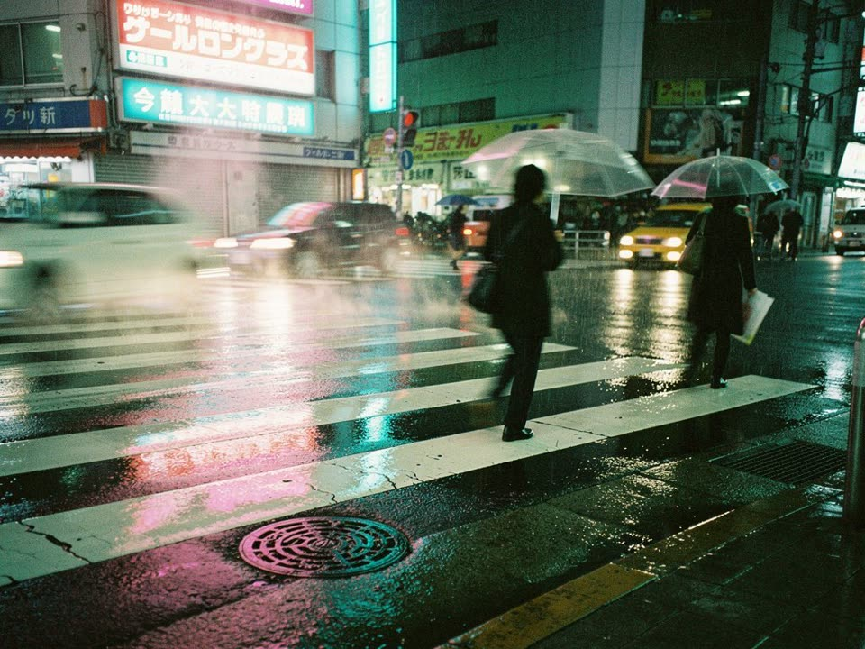

Kodak Portra 800 rainy midnight street
GRN-013Grain / FilterGPT Image 2.5 via Picsart (two-model test)by Elian Iao (@elio_ia)2026-09-29

Same-prompt two-model test: candid 35mm street photo on Kodak Portra 800, rainy midnight crossing.
Prompt
#picsartpartner @picsart @picsartai Testing 35mm street photography realism in Picsart AI Playground 🌧️📸 Same prompt, two different models: "Candid 35mm street photography shot on Kodak Portra 800, a rainy midnight crosswalk in Shinjuku, authentic motion blur, neon signs reflecting off wet pavement and umbrellas, steam rising from street grates, raw lens flare, film grain, unpolished realistic aesthetic, zero CGI." 1️⃣ Flux 2 Pro 2️⃣ GPT Image 2.5 Which model captured authentic film grain and wet pavement reflections better? Let me know below 👇 #PicsartAI #ad
Our Seedance 2.5 adaptation
[ADAPTED for Seedance 2.5 by Grok Bot; not the creator's prompt. Follows the official BytePlus Seedance 2.5 prompt guide: asset binding → one-sentence summary → integer-second timeline → consistency notes → negatives.] API: duration 10, ratio 16:9, resolution 1080p, generate_audio true. Summary: A 10-second candid 35mm street-photography-style clip of a rainy midnight crosswalk in a dense neon district, with the look of Kodak Portra 800 pushed at night. 0-4s: Handheld eye-level shot from the curb. Pedestrians with umbrellas cross through frame with authentic motion blur. Neon signs reflect off the wet pavement. 4-7s: The camera pans slowly to follow one person with a clear umbrella. Steam rises from a street grate in the foreground, and a raw lens flare from a passing headlight streaks across the frame. 7-10s: The signal changes. The crowd thins and the camera holds on the shimmering reflections. Film look: Portra 800 color palette, visible organic grain, slightly lifted blacks, natural halation around neon, unpolished realism, zero CGI. Audio: rain on umbrellas, tires on wet asphalt, a crossing-signal chirp, distant traffic. No BGM. No subtitles, no readable signage text.
Tags: Kodak Portra 800, 35mm, night street